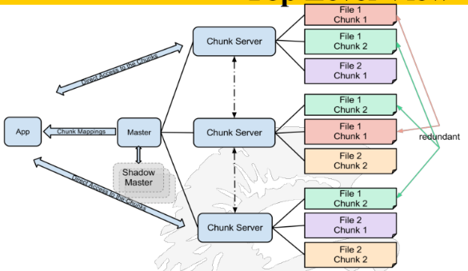

MapReduce
[MapCombineShuffleReduce] data processing 'at scale'
Too much data to crawl, too few computing power
Google Building Blocks: MapReduce Google File System BigTable
Google Specialized Software Systems
Google has built several major software systems for their internal processing
MapReduce - an easy way to write and run large-scale jobs on clusters of machines
generate production index data more quickly
perform ad-hoc experiments rapidly
Dean & Ghemawat. MapReduce: Simplified Data Processing on Large Clusters, OSDI, 2004
GFS (Google File System) a large-scale distributed file system
Ghemawat, Gobioff, & Leung. Google File System, SOSP 2003
BigTable - a semi-structured storage system
online, efficient access to per-document information at any time
multiple processes can update per-doc info asynchronously
critical for updating documents in minutes instead of hours
Chang, Dean, Ghemawat, Hsieh, Wallach, Burrows, Chandra, Fikes, & Gruber.
Bigtable: A Distributed Storage System for Structured Data, OSDI 2006
Introduction to MapReduce
MapReduce is a methodology for exploiting parallelism in computing clouds (racks of interconnected processors)
It has become a common way to analyze very large amounts of data
MapReduce was initially developed at Google
In 2004 Google was using MapReduce to process 100TB/day of data
Today there are MapReduce Users Groups around the world, see https://www.meetup.com/topics/mapreduce/
How is MapReduce Used by Search Engines?
At Google: – Building Google's Search Index – Article clustering for Google News – Statistical machine translation
At Yahoo!: – Building Yahoo!’s Search Index – Spam detection for Yahoo! Mail
At Facebook: – Data mining – Ad optimization – Spam detection
Motivation Beyond Search Engines
Modern Internet applications have created a need to manage immense amounts of data quickly.
In many of these applications, the data is extremely regular, and there is ample opportunity to exploit parallelism.
Some examples:
Dish network collecting every click of the remote – Dish network supplies TV reception via satellite; they collect data on their set top box and send it back to headquarters
Tesla collecting every usage of the car – Tesla's are connected to the cellular network; the car reports back all of its actions to Tesla
Why Parallelization is Hard
Parallelization is “easy” if processing can be cleanly split into *n* units:
(Diagram showing "work" being split into w1, w2, w3 with a note about "Partition problem")
Assigned to n workers
And there is an easy way to combine the outputs
Why Parallelization is Hard
(Diagram shows W1, W2, W3, W4 and two threads; note: "we would like to have as many threads as there are work units, but this may not be the case")

But there are complicated issues to deal with!
What if we have more work units than threads?
How do we assign work units to worker threads?
How do we aggregate/combine the results at the end?
How do we know all the workers have finished?
What if the work cannot be divided into completely separate tasks?
MapReduce solves all of these problems so the programmer does not have to deal with them
Programming with Multiple Threads Poses Challenges
Thread 1:
xxxxxxxxxxvoid foo() { x++; y = x;}Thread 2:
xxxxxxxxxxvoid bar() { y++; x++;}If the initial state is x = 6, y = 0, what are the final values of x and y after the threads finish running? Possible solutions include: (8,8) and (8,7)
Multithreaded = Unpredictability
Many things that look like “one step” operations actually take several steps under the hood:
Thread 1:
void foo() {eax = mem[x];inc eax;mem[x] = eax;ebx = mem[x];mem[y] = ebx;}
Thread 2:
xvoid bar() {eax = mem[y];inc eax;mem[y] = eax;eax = mem[x];inc eax;mem[x] = eax;}
(the same programs, but at the assembly code level)
When we run a multithreaded program, we don’t know what order threads run in, nor do we know when they will interrupt one another.
The “corrected” example
Thread 1:
xvoid foo() {sem.lock();x++;y = x;sem.unlock();}
Thread 2:
xvoid bar() {sem.lock();y++;x++;sem.unlock();}
The global variable sem, as defined by
xcCopyEditSemaphore sem = new Semaphore();
guards access to x & y; semaphores are generally integer variables that are shared between threads; the variable protects the “critical section” from being simultaneously accessed.
Processing Across a Machine Cluster Introduces Unpredictability on Many Levels
Synchronization problems apply to more than just low-level operations within a critical section of code – Other issues include: – Pulling work units from a queue – Assigning work units to an available thread – Work units reporting back to the master unit – Telling another thread that it can begin the “next phase” of processing
… All require synchronization!
How MapReduce Solves the Parallelization Problems
So MapReduce provides – Automatic parallelization of code across multiple threads and across multiple processors – Fault tolerance in the event of failure of one or more nodes – I/O scheduling – Monitoring & Status updates
Map/Reduce - Beginnings
Map/Reduce – Is a programming model borrowed from the programming language Lisp – (and other functional languages, e.g. ML*)
Many problems can be phrased using the MapReduce paradigm
Easy to distribute computation across nodes
Nice retry/failure semantics
*ML programming language is a general purpose functional programming language, see https://en.wikipedia.org/wiki/ML_(programming_language)
Here is a quick map(), reduce() example. Run the followin, in https://www.mycompiler.io/new/python:
xCelsius = [39.2, 36.5, 37.3, 37.8]Fahrenheit = map(lambda x: (float(9)/5)*x + 32, Celsius)fa = list(Fahrenheit)print(fa)Centigrade = map(lambda x: (float(5)/9)*(x-32),fa)print(list(Centigrade))from functools import reducer = reduce(lambda x,y: x+y, [47,11,42,13])print(r)
What is MapReduce?
MapReduce is a programming model that generically works this way:
A map function extracts some intelligence from raw data
A shuffle step organizes the resulting output
A reduce function aggregates the data output from the shuffle step
Users specify the computation in terms of a map and a reduce function
Underlying runtime system automatically parallelizes the computation across large-scale clusters of machines, and
Underlying system also handles machine failures, efficient communications, and performance issues.
The Map/Reduce Paradigm
A large number of records are broken into segments
Map: extracts something of interest from each segment
Group: sorts the intermediate results from each segment (sometimes called shuffle)
Reduce: aggregates intermediate results
Generate final output
Key idea: to re-phrase problems in such a way that the input can be divided into parts and operated on in parallel and the results combined to produce a solution to the original problem
The Map&Reduce Routines
Using map-reduce one must write 2 functions called Map and Reduce
The system manages the parallel execution and coordination of tasks; it is all done automatically
A map-reduce computation proceeds as follows:
Some number of map tasks each are given one or more chunks to process
These map tasks turn the chunk into a sequence of key-value pairs; the way the pairs are produced depends upon the code for the Map function
Key-value pairs from each Map task are collected by a master controller and sorted by key; keys are divided among all the Reduce tasks, so all key-value pairs with the same key wind up at the same Reduce task
Reduce tasks work on one key at a time, and combine all the values associated with that key in some way; the manner of combination depends upon the Reduce code
Schematic of a Map-Reduce Computation
Here is the dataflow:

A MapReduce Example – Counting Word Occurrences
Counting the number of occurrences for each word in a collection of documents
The input file is a repository of documents
Each document is an element passed to a separate processor
The Map function:
Parses the document, extracts each word and uses each word as a key of type String (the words obtained by parsing), w₁, w₂, ...
For each word it assigns an integer,
1Each processor outputs key-value pairs where the key is a word and the value is always
1, namely (w₁, 1), (w₂, 1), ..., (wₙ, 1)
If a word w appears n times in a single document, then there will be n key-value pairs (w, 1) in the output of the processor handling that document
If a word w appears m times among all documents, then there will be m key-value pairs (w, 1) in the output
Count Word Occurrences - Pseudo-Code
The code below is similar to what a programmer would write to process multiple documents on a cluster of machines using map/reduce
xMap(String input_key, String input_value):// input_key: document name// input_value: document contentsfor each word w in input_value:EmitIntermediate(w, "1");reduce(String output_key, Iterator intermediate_values):// output_key: a word// output_values: a list of countsint result = 0;for each v in intermediate_values:result += ParseInt(v);Emit(AsString(result));
Word Count Execution: An Alternate Graphical View
Distributed Execution Overview
Looking Under the Hood at the Map Task
The user program forks a Master controller process and some number of Worker processes at different compute nodes;
A Worker handles either Map tasks or Reduce tasks, but not both
The Master must – Create some number of Map and Reduce tasks – These tasks are assigned to Worker processes by the Master – Typically there is one Map task for every chunk of the input – Keeps track of the status of each Map and Reduce task (states are: idle, executing on a Worker, completed)
Each Map task is assigned one or more chunks of the input file(s) and executes on it the code
The Map task creates a file for each Reduce task on the local disk of the Worker that executes the Map task
The Master is told of the location and sizes of each of these files and the Reduce task for which each is destined
Looking Under the Hood at the Reduce Task
The master controller process knows how many Reduce tasks there will be, say r
The user defines r
The master controller picks a hash function that applies to keys and produces a bucket number from 0 to r-1
Each key output by a Map task is hashed and its key-value pair is put in one of r local files – Each file will be processed by a Reduce task
After all Map tasks have completed successfully, the master controller merges the file from each Map task that are destined for a particular Reduce task and feeds the merged file to that process
For each key k, the input to the Reduce task that handles key k is a pair (k, [v₁, ..., vₙ]) where (k, v₁), (k, v₂), ..., (k, vₙ) are all the key-value pairs with key k coming from all the Map tasks
Explanation of the Reduce Task
The Reduce function is written to take pairs consisting of a key and a list of associated values, and combines them in some way
The Reduce function output is a sequence of key-value pairs consisting of each input key k paired with the combined value
Outputs from all Reduce tasks are merged into a single file
Reduce function adds up all the values and outputs a sequence of (w, m) pairs where w is a word that appears at least once in the documents and m is the total number of occurrences
The Reduce function is generally associative and commutative, implying values can be combined in any order yielding the same result
The Problems Google Tried to Solve with a New File System
Google needed a large-scale and high-performance unified storage system that must:
Be global. Any client can access (read/write) any file. This allows for sharing of data among different applications.
Support automatic sharding of large files over multiple machines. This improves performance by allowing parallel processes on each file chunk and also deals with large files that cannot fit into a single disk.
Support automatic recovery from failures.
Be optimized for sequential access to huge files and for read and append operations which are the most common.
Google File System General Goals
A scalable, distributed file system for large distributed data-intensive applications
Provides fault tolerance
Runs on cheap, commodity hardware
Delivers high aggregate performance to large number of clients
GFS: not your typical file system
Lacks typical per-directory data structure to list each file in the directory
Does not support aliases (i.e. hard or sym links)
Namespace: lookup table that maps full pathnames to metadata
Lookup table fits in memory (prefix compression)
Also known as incremental encoding: a type of delta encoding compression algorithm whereby common prefixes and their lengths are recorded so that they need not be duplicated
The Google File System Design Assumptions –
Files will be HUGE
Multi-gigabyte files are common
Not practical to have ~8 billion files
Each file contains many “application objects”
Multi-terabyte datasets
I/O operations, block sizes must be considered
Most file modifications are appends (atomic)
Random writes practically non-existent
Once written… sequential reads
Caching not terribly important
There will be a single master server monitoring multiple chunk servers
Google File System: Top Level View
Google File System (GFS) is a proprietary distributed file system for efficient, reliable access to data using large clusters of commodity hardware.
Files are divided into fixed-size chunks of 64 megabytes, similar to clusters or sectors in regular file systems, which are only extremely rarely overwritten or shrunk; files are usually appended to or read.

GFS is designed for system-to-system interaction; Chunk servers replicate the data automatically See: https://en.wikipedia.org/wiki/Google_File_System
Master Server and Chunk Servers
Master Server
Holds all metadata:
Namespace (directory hierarchy)
Access control information (per-file)
Mapping from files to chunks
Current locations of chunks (chunkservers)
Delegates consistency management
Garbage collects orphaned chunks
Migrates chunks between chunk servers
Chunk Server
Stores 64 MB file chunks on local disk using standard Linux filesystem, each with version number and checksum
Read/write requests specify chunk handle and byte range
Chunks are replicated on configurable number of chunkservers (default: 3)
No caching of file data (beyond standard Linux buffer cache)
Google File System (GFS)
Master manages metadata
Data transfers happen directly between clients / chunkservers
Files broken into chunks (typically 64 MB)
Chunks are triplicated across three machines for safety
GFS: Major Aspects
Append vs. Rewrite
GFS is optimized for appended files rather than rewrites. That's because clients within Google rarely need to overwrite files -- they add data onto the end of files instead. While it's still possible to overwrite data on a file in the GFS, the system doesn't handle those processes very efficiently
Which Replica Does GFS use?
The GFS separates replicas into two categories: primary replicas and secondary replicas. A primary replica is the chunk that a chunkserver sends to a client. Secondary replicas serve as backups on other chunkservers.
The master server decides which chunks will act as primary or secondary. If the client makes changes to the data in the chunk, then the master server lets the chunkservers with secondary replicas know they have to copy the new chunk off the primary chunkserver to stay current.
What About Big Files?
If a client creates a write request that affects multiple chunks of a particularly large file, the GFS breaks the overall write request up into an individual request for each chunk. The rest of the process is the same as a normal write request.
Heartbeats and Handshakes
The GFS components give system updates through electronic messages called heartbeats and handshakes. These short messages allow the master server to stay current with each chunkserver's status.
Google File System vs. BigTable
GFS provides raw data storage
But Google needs a system for handling:
Trillions of URLs
Geographic locations such as physical entities, roads, satellite image data, etc
Per user data for billions of people including preference settings, recent queries and searches
And it must be capable of • storing semi-structured data • Reliable, scalable, etc
Bigtable is a compressed, high performance, proprietary data storage system built on top of the Google File System
It is used by a number of Google applications, such as web indexing, MapReduce, Google Maps, YouTube and Gmail
Big Table Data Model
Not a Full Relational Data Model
Provides a simple data model
Supports dynamic control over data layout
Allows clients to reason about the locality properties
A Table in Bigtable is a:
Sparse
Distributed
Persistent
Multidimensional
Sorted map
Bigtable Storage Model
Data is indexed using row and column names
Data is treated as uninterpreted strings
(row:string, column:string, time:int64) → string
Rows
Data maintained in lexicographic order by row key
Tablet: rows with consecutive keys • Units of distribution and load balancing
Columns
Column families
Cells
Timestamps
Rows
Name is an arbitrary string
Access to data in a row is atomic
Row creation is implicit upon storing data
Rows ordered lexicographically
Rows close together lexicographically usually reside on one or a small number of machines
Each row/column intersection can contain multiple cells
Each cell contains a unique timestamped version of the data for that row and column
Storing multiple cells in a column provides a record of how the stored data has changed over time
Columns
Columns have two-level name structure:
family:optional_qualifier
Column family
Unit of access control
Has associated type information
Qualifier gives unbounded columns
Additional level of indexing, if desired
Timestamps
Used to store different versions of data in a cell
New writes default to current time, but timestamps for writes can also be set explicitly by clients
Garbage Collection
Per-column-family settings to tell Bigtable to GC
“Only retain most recent K values in a cell”
“Keep values until they are older than K seconds”
API: Create / delete tables and column families
References
Google Videos on map/reduce https://www.youtube.com/watch?v=yjPBkvYh-ss (Lecture 1, 46 min) https://www.youtube.com/watch?v=-vD6PUdf3Js (Lecture 2, 52 min)
Wikipedia, http://en.wikipedia.org/wiki/MapReduce
Data-Intensive Text Processing with MapReduce, Jimmy Lin and Chris Dyer, Morgan & Claypool Synthesis Lectures on Human Language Technologies, 2010 http://www.umiacs.umd.edu/~jimmylin/MapReduce-book-final.pdf
Hadoop is an open source implementation of MapReduce http://hadoop.apache.org/
MapReduce: Simplified Data Processing on Large Clusters, by Jeffrey Dean and Sanjay Ghemawat, http://research.google.com/archive/mapreduce.html
And...
The past:
• https://www.dataversity.net/a-brief-history-of-the-hadoop-ecosystem
• https://data-flair.training/blogs/hadoop-history/
The present:
• Bigtable is available via GCP, as is Spanner, another cloud DB. Here is how they compare.
Here are two data-processing architectures derived from MapReduce: Spark, Pig.